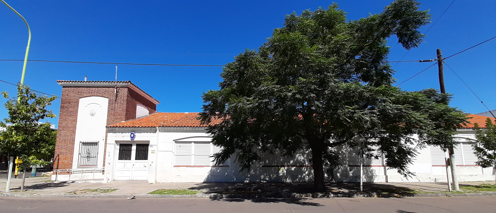

#La_Institución

Historia del Instituto
Nuestra Institución cuenta con una trayectoria de 32 años. Inició sus actividades en 1990 como Instituto de Tecnología del Sur Argentino, siendo cambiada esta denominación por la actual de Instituto Tecnológico de Bahía Blanca en el año 2002. En ese año, un grupo de profesores se hace cargo de la institución dándole un nuevo impulso, tanto en su faz pedagógica como en infraestructura.
Actualmente el instituto atiende la demanda de estudiantes y docentes de la ciudad, de su amplia zona de influencia y de la región sur de nuestro país, en Carreras vinculadas con la frontera del conocimiento humano en lo que al área de la cibernética se refiere. Es de destacar, la reconocida y activa inserción de la Institución en la vida educativa y cultural de nuestro medio.
Esta Institución Educativa es un componente del sistema social y funciona fundamentada en el supuesto de que el conocimiento contribuye a un mejor funcionamiento de la sociedad, al crecimiento económico y le permite al hombre y a la mujer un obrar auténticamente humano.
La educación trasciende la función informativa, tiene como elementos inseparables la libertad y los valores, que le posibilitan al hombre y a la mujer un “saber ser” y “saber ser con los demás”, esta propuesta supone la elección de valores de vida que deben orientar a los alumnos. En esta perspectiva, la misión como educadores pretende que todos los integrantes de la comunidad se conviertan en centros de iniciativa y de acciones con una clara interpretación de roles, compartiendo un marco común de valores que le dará su identidad peculiar.
Autoridades
Rector
Dr. Alan TURING
TÍTULO ACADÉMICO: Matemática, Informática Teórica
ALMA MÁTER: Universidad de Cambridge
E-MAIL: alan.turing@bhitech.edu
Vicerrectora
Dra. Marie CURIE
TÍTULO ACADÉMICO: Física, Química
ALMA MÁTER: La Sorbona (París)
E-MAIL: marie.curie@bhitech.edu
Secretario Académico
Dr. Tim BERNERS-LEE
TÍTULO ACADÉMICO: Física, Ciencias de la Computación
ALMA MÁTER: Universidad de Oxford
E-MAIL: tim.berners-lee@bhitech.edu
Docentes
Dr. Linus TORVALDS
TÍTULO ACADÉMICO: Doctor en Ciencias, Ingeniería de Software
ALMA MÁTER: Universidad de Helsinki
E-MAIL: linus.torvalds@bhitech.edu
Dr. Richard STALLMAN
TÍTULO ACADÉMICO: Doctor en Ciencias, Física
ALMA MÁTER: Universidad de Harvard, Instituto de Tecnología de Massachusetts
E-MAIL: richard.stallman@bhitech.edu
Lic. Bill GATES
TÍTULO ACADÉMICO: Ciencias de la Computación
ALMA MÁTER: Universidad de Harvard
E-MAIL: bill.gates@bhitech.edu
Mg. Serguéi BRIN
TÍTULO ACADÉMICO: Máster en Ciencias de la Computación
ALMA MÁTER: Universidad Stanford
E-MAIL: serguei.brin@bhitech.edu
Lic. Ana DAILOFF
TÍTULO ACADÉMICO: Ciencias de la Computación
ALMA MÁTER: Universidad Nacional del Sur (Bahía Blanca)
E-MAIL: ana.dailoff@bhitech.edu
Ing. Norma BROS
TÍTULO ACADÉMICO: Ingeniería en Sistemas
ALMA MÁTER: Universidad de Buenos Aires
E-MAIL: norma.bros@bhitech.edu
Dra. Viviana GABELA
TÍTULO ACADÉMICO: Doctora en Física
ALMA MÁTER: Universidad de Buenos Aires
E-MAIL: viviana.gabela@bhitech.edu
Lic. Raquel VILLAMAYOR
TÍTULO ACADÉMICO: Licenciada en Análisis de Sistemas
ALMA MÁTER: Universidad Nacional de La Plata
E-MAIL: raquel.villamayor@bhitech.edu